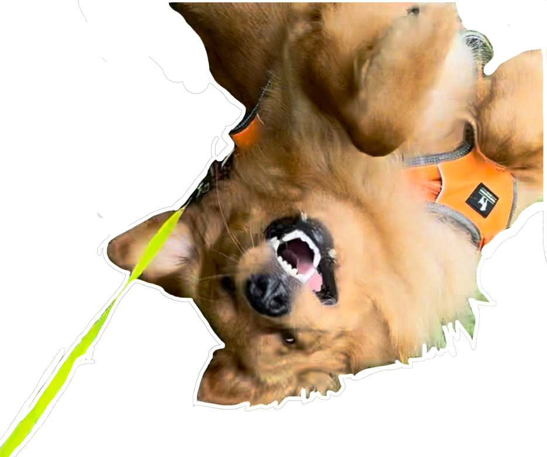

1. DESCRIBE YOUR PREVIOUS EXPERIENCES WITH CODING. WHAT CLASSES HAVE YOU ALREADY TAKEN WHERE YOU WERE EXPOSED TO HTML/CSS/JS? WHAT PARTS OF THE CLASS RESONATED WITH YOU? WHAT PARTS WERE MOST CONFUSING?
I remember my computer science class from elementary –– some HTML and a lot of QB64. I only really developed a fundamental of these last semesetr, in Interaction 1. I loved creating wireframes but the actual code frustrated me. I did find out that creating many divs helped! I never really retained the information from my prof's lectures and the assignmnets + feedback was always unclear.
I am, however, excited to have a separate hands-on class this semester!
2.HOW EXCITED ABOUT LEARNING CODE ARE YOU? ARE YOU NERVOUS ABOUT LEARNING CODE? IF SO, WHY? WHAT CAN I DO IN THIS CLASS TO HELP REDUCE THIS ANXIETY?
A little bit of both! I would like to strengthen my basics, get organized, and learn about more interactive aspects of code. I get a little nervous about asking silly questions & about the limitations around code sometimes. I'd like to learn how to format typography better. One thing that will really help is tip-sheets (like the one from last week).
3.HOW DO YOU IMAGINE CODING FITTING IN WITH THE REST OF YOUR DESIGN CURRICULUM AND CAREER AFTER COLLEGE?
I also love the idea of involving more creative and interactive elements in editorial and infographic design, something like Vox does! I also want to be able to create and enhance websites. Another interesting thing would be to think about the intersection of code & print.
4.WHAT TEXT EDITOR DO YOU PREFER TO USE?
VS Code; the only one i know!
5.HAVE YOU USED GITHUB BEFORE? DO YOU KNOW WHAT IT IS? DESCRIBE YOUR UNDERSTANDING OF GITHUB.
I used GitHub for Interaction last semester. To be honest, I'm not completely sure about what it is or how it works, but the way I understood it is as a hosting tool that basically let's code become a public/private website.
Or maybe... it's just magic!
6.DESCRIBE THE RELATIONSHIP BETWEEN HTML, CSS AND JAVASCRIPT. TRY USING A UNIQUE ANALOGY TO DESCRIBE THIS RELATIONSHIP. BONUS POINTS FOR CREATIVE ANALOGIES.
I usually use food to help my non-design friends understand this-
1. Imagine yourself making a smoothie. You add Orange Juice (HTML), the base, to give it a majority structure. Then you add some toppings (CSS) of your choice that make the taste, color, and overall look a bit different. And lastly, you (JS), this is the thing that can sort of manipulate the two other elements, make them interact and bring them together. Change them if needed, and more!
7.USING EACH HTML HEADING TAG, LIST YOUR FAVORITE FOODS RANKED BY IMPORTANCE (REMEMBER, THERE ARE SIX LEVELS OF HEADING TAGS, `H1` THROUGH `H6`).
chipotle burrito bowl
chipotle burrito bowl
chipotle burrito bowl
dosa
rajma chawal
sorry, i really like chipotle :p
8. CREATE AN UNORDERED LIST ( `UL` ) AND LINK TO SOME OF YOUR FAVORITE GRAPHIC DESIGN OR DEVELOPMENT RELATED WEBSITES. INCLUDE A PARAGRAPH ( `P` ) ON EACH SITE DESCRIBING WHY IT IS IMPORTANT TO YOU.
It's pretty great to get inspo and see what other Web Designers are upto!
9. INSERT AN IMAGE (`IMG`) THAT BRINGS YOU JOY TO THE PAGE. MAKE SURE THE IMAGE INCLUDES `ALT TEXT` THAT DESCRIBES THE IMAGE.

10. INSERT A VIDEO EMBED INTO THE PAGE (FOR EXAMPLE, A YOUTUBE OR VIMEO EMBED TAG OF A VIDEO OF YOUR CHOOSING).
11. NEST THE FOLLOWING SERIES OF HTML TAGS INSIDE EACH OTHER, WHERE EACH → REPRESENTS A NEW LEVEL. MAKE SURE TO MAINTAIN PROPER INDENTATION.
12. CREATE AN ORDERED LIST OF THE TOP 5 COUNTRIES YOU’D LIKE TO VISIT. WITHIN EACH COUNTRY, CREATE ANOTHER ORDERED LIST OF THE TOP CITIES YOU’D LIKE TO VISIT IN THAT COUNTRY. MAINTAIN PROPER INDENTATION AND MAKE SURE YOU NEST YOUR ORDERED LISTS PROPERLY.
Top 5 countries I'd like to visit:
India
Home, Gurgaon
Italy
Venice
Milan
Florence
Naples
Rome
Indonesia
Bali
Jakarta
Brazil
Salvador
Rio de Janeiro
Sao Paolo
Japan
Tokyo
Kyoto
Osaka
Hiroshima
13. USE `PRE` TAGS TO CREATE A SIMPLE [CONCRETE POETRY](HTTPS://EN.WIKIPEDIA.ORG/WIKI/CONCRETE_POETRY) VERSION OF A HAIKU OR OTHER POEM YOU WRITE. THE POEM SHOULD REPRESENT HOW YOU FEEL AT THIS MOMENT.
Hunger in my tum
My mouth wants to go yum-yum
I will go get some
14. WRITE AN HTML COMMENT THAT IS HIDDEN FROM THE BROWSER, BUT DISPLAYS IN THE CODE.
15. CREATE AN UNORDERED LIST OF AT LEAST 6 MUSICAL ARTISTS YOU LIKE TO LISTEN TO. ADD A CLASS TO EACH LIST ITEM THAT MATCHES THE GENRE OF MUSIC OF THAT ARTIST.
hover!
Big Thief
Elliott Smith
Prateek Kuhad
The Beatles
The Zombies
Pixies
16. DESCRIBE THE DIFFERENCE BETWEEN BLOCK, INLINE-BLOCK AND INLINE ELEMENTS.
Block elements take up the full width and have a line break before and after.
In-Line Block elements take up the full width and have a line break before and after.
Inline Elements elements are displayed in a line.
19. IN A `SCRIPT` TAG, USE THE CONSOLE.LOG FUNCTION TO WRITE A MESSAGE TO THE CONSOLE (CMD+OPT+U). TELL ME SOMETHING INTERESTING ABOUT YOURSELF.